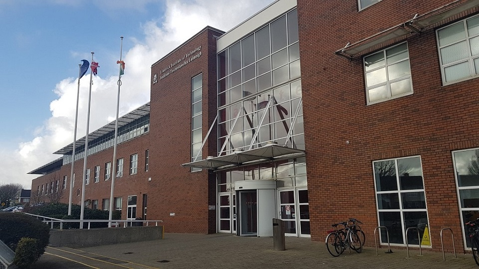
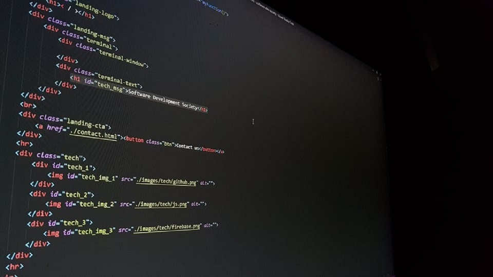

Background

About us
Located within the moylish campus of Limerick Institute of Technology, the software development society was created in 2019 to bring students studying within the IT sector's togheter to work on projects.

Mission
Our goal is learn through action, as a group the software development society has developed real world application such as a web based kanban board and video games. The purpose of this is to develop a skill set so that togheter we improve.